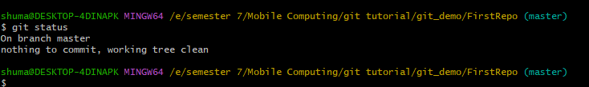
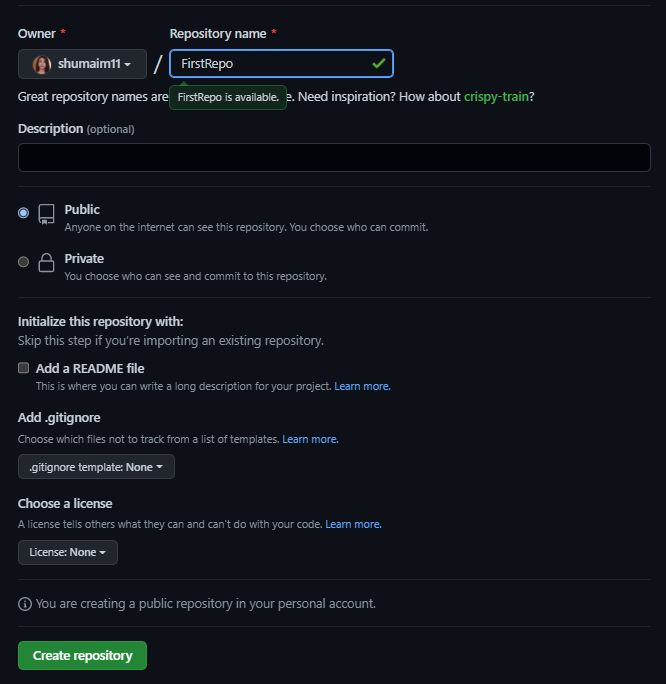
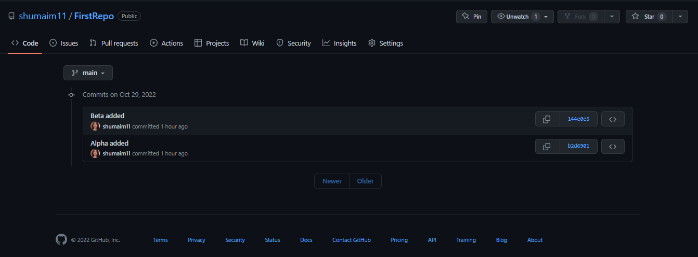

What Is Git?
Git is a version control system for tracking changes in computer files. It helps in coordinating work amongst several people in a project and tracks progress over time. Unlike the centralized version control system, Git branches can be easily merged. A new branch is created every time a developer wants to start working on something. This ensures that the master branch always has a production-quality code.
Git is a distributed version control system, so here, every developer gets their local repository with full commit history. The commit history makes Git fast, as now a network connection is not needed to create commits or perform difference between commits.
Now that we know more about Git let us explore GitHub.
What Is GitHub?
GitHub is a Git repository hosting service that provides a web-based graphical interface (GUI). It helps every team member work together on a project from anywhere, making it easy to collaborate.
GitHub is one place where project managers and developers coordinate, track, and update their work, so projects stay transparent and on schedule. The packages can be published privately, within the team, or publicly for the open-source community. Downloading packages from GitHub enables them to be used and reused. GitHub helps all team members stay on the same page and stay organized. Moderation tools, like issue and pull request locking, helps the team focus on the code.
Next in this how Git works tutorial, let's look at the several commands used in Git.
Different Commands in Git
So far, in the "How Git Works" tutorial you read all about Git and GitHub. Next comes Git commands.
- Git config
- Git init
- Git add
- Git diff
- Git commit
- Git reset
- Git status
- Git merge
- Git push
- Git pull
Next in this tutorial, we will go over the Git commands in detail.
Git Push Command
The Git push command is used to push the local repository content to a remote repository. After a local repository has been modified, a push is executed to share the modifications with remote team members. Pushing is the way commits are transferred from the local repository to the remote repository.

Let us take a look at a Git push command demo.
Demo of Git Push Command
Now let’s start with opening Git Bash and configuring it with a username and email ID. To configure, we use the following commands:
git config --global user.name "Shumaim11"
git config --global user.email "shumaimsaleem@gmail.com"
git config --list

Then, let's check the current working directory:
pwd

To create a repository in the working directory, use the following commands:
mkdir git_demo
cd git_demo
pwd

The directory "Git_demo" will be empty for now.
Let's create a folder for the repository.
mkdir FirstRepo
cd FirstRepo
pwd

The folder "FirstRepo" is empty. We will now initialize a repository to our folder.
git init

Something called the "master" appears on the screen. Whenever a Git repository is created for the first time, it creates a branch, and the name of the branch is master. Navigate to the folder; you can find a hidden ".git" folder.
If you check the folder, you can see several directories and configurations. Make sure you don't make any changes to any of the directories.

This is created when a repository is initialized.
Moving further, let's make some commits. For that, we will create two files and commit them one by one.
For the first file, the commands are as follows:
touch alpha.txt
notepad alpha.txt
A notepad opens on the screen. Type anything inside it, save it and close it.

Next, let's check the status of the file that was created.
git status
This shows that there isn't a file committed yet, and there are untracked files. The untracked files can be seen in red.

For Git to track that file, add command is used. If you know the exact name of the file, you can specify it and simply type the following command:
git add .

The next step is to commit the file.
git commit -m "Added the file named Alpha"

Let's check the status of the file again.
git status
You'll notice that there are no more commits to be made, as there was a single notepad and that was committed in the previous step.
Next, check all the information regarding the commits that were made.
git log

This displays the commit ID, author's name, and email ID used. You can also find the date and commit message on the screen.
Let's make one more commit.
Repeat the same process again. We will make a file, add something to it, and close it.
touch beta.txt
notepad beta.txt
A notepad opens on the screen. Type anything inside it, save it and close it.

git add .
git commit -m "Added the file named Beta"

git log

We can see the commit number and order of the commits.
Now, let's push the two notepads on GitHub. Open your GitHub account, and create a new repository. The name of the repository will be "FirstRepo."
Copy the "git remote add origin" URL.
Paste the copied URL onto the Git Bash.

git remote -v

Now, let's push the content on to the remote repository.
git push --set-upstream origin main

The repository is created on the server, and the content is pushed into that repository. It links the master branch on the local repository to the master branch on the server.
Next, refresh the GitHub page, and you can find all the commits there.
Each commit has a hash ID, which contains the details of each commit.
You can open each notepad and check the content inside.